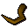

Lava eel

| Config name | lava_eel |
| Item id | 2149 |
| Value | 150 gp |
| Weight | 7oz |
| Members | Yes |
| Tradeable | No |
| Stackable | No |
| Options | Eat |
| Defined in | scripts/skill_cooking/configs/cooking_generic/food_cooked.obj |
Lava eel
Strange, it looks cooler now it's been cooked.
How to make
| Skill | Level | XP | Ingredients | Tool | How | Where | Makes |
|---|---|---|---|---|---|---|---|
| Cooking | 53 | 140.0 | Raw lava eel | use on object | range or fire | 1 can spoil into Lava eel |
Quests
Referenced in scripts
scripts/_test/scripts/cheats/cheat_bank.rs2scripts/areas/areas_heroes_guild/scripts/achietties.rs2scripts/levelup/scripts/levelup_unlocks_cooking.rs2scripts/quests/quest_hero/scripts/hero_journal.rs2